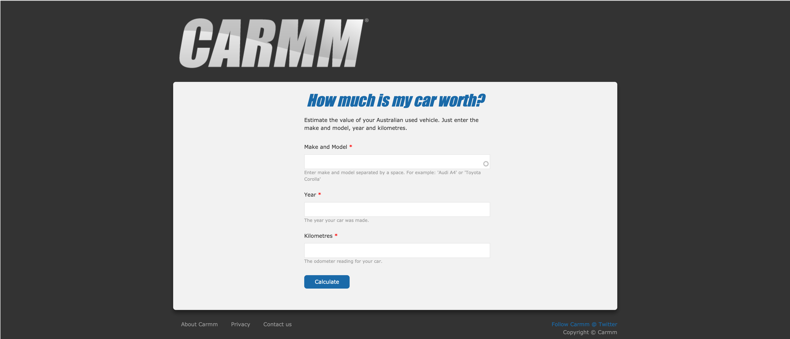

# Why would anyone need JavaScript generator functions? --- ## You might not need generator functions --- ## Perhaps you don’t need promises ---  --- ## You might not care about generator functions --- 1. Efficient code <!-- .element: class="fragment" --> 2. Impossible code <!-- .element: class="fragment" --> 3. Safer code <!-- .element: class="fragment" --> --- ## What is a generator function? --- ```javascript [|1|11-13] function* myGeneratorFunction() { // We create some data here const listItem01 = document.createElement('li'); listItem01.innerHTML = 'Efficient code'; const listItem02 = document.createElement('li'); listItem02.innerHTML = 'Impossible code'; const listItem03 = document.createElement('li'); listItem03.innerHTML = 'Safer code'; // Now we parcel out the data piece-by-piece yield listItem01; yield listItem02; yield listItem03; } ``` ---